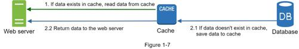
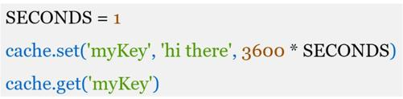
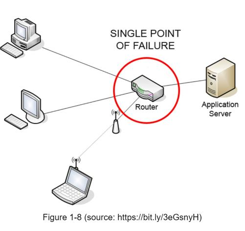

A cache is a temporary storage area that stores the result of expensive responses or frequently accessed data in memory so that subsequent requests are served more quickly. As illustrated in Figure 1-6, every time a new web page loads, one or more database calls are executed to fetch data. The application performance is greatly affected by calling the database repeatedly. The cache can mitigate this problem.
The cache tier is a temporary data store layer, much faster than the database. The benefits of having a separate cache tier include better system performance, ability to reduce database workloads, and the ability to scale the cache tier independently. Figure 1-7 shows a possible setup of a cache server:

After receiving a request, a web server first checks if the cache has the available response. If it has, it sends data back to the client. If not, it queries the database, stores the response in cache, and sends it back to the client. This caching strategy is called a read-through cache. Other caching strategies are available depending on the data type, size, and access patterns. A previous study explains how different caching strategies work [6].
Interacting with cache servers is simple because most cache servers provide APIs for common programming languages. The following code snippet shows typical Memcached APIs:

Here are a few considerations for using a cache system:
•Decide when to use cache. Consider using cache when data is read frequently but modified infrequently. Since cached data is stored in volatile memory, a cache server is not ideal for persisting data. For instance, if a cache server restarts, all the data in memory is lost. Thus, important data should be saved in persistent data stores.
•Expiration policy. It is a good practice to implement an expiration policy. Once cached data is expired, it is removed from the cache. When there is no expiration policy, cached data will be stored in the memory permanently. It is advisable not to make the expiration date too short as this will cause the system to reload data from the database too frequently. Meanwhile, it is advisable not to make the expiration date too long as the data can become stale.
•Consistency: This involves keeping the data store and the cache in sync. Inconsistency can happen because data-modifying operations on the data store and cache are not in a single transaction. When scaling across multiple regions, maintaining consistency between the data store and cache is challenging. For further details, refer to the paper titled “Scaling Memcache at Facebook” published by Facebook [7].
•Mitigating failures: A single cache server represents a potential single point of failure (SPOF), defined in Wikipedia as follows: “A single point of failure (SPOF) is a part of a system that, if it fails, will stop the entire system from working” [8]. As a result, multiple cache servers across different data centers are recommended to avoid SPOF. Another recommended approach is to overprovision the required memory by certain percentages. This provides a buffer as the memory usage increases.

•Eviction Policy: Once the cache is full, any requests to add items to the cache might cause existing items to be removed. This is called cache eviction. Least-recently-used (LRU) is the most popular cache eviction policy. Other eviction policies, such as the Least Frequently Used (LFU) or First in First Out (FIFO), can be adopted to satisfy different use cases.